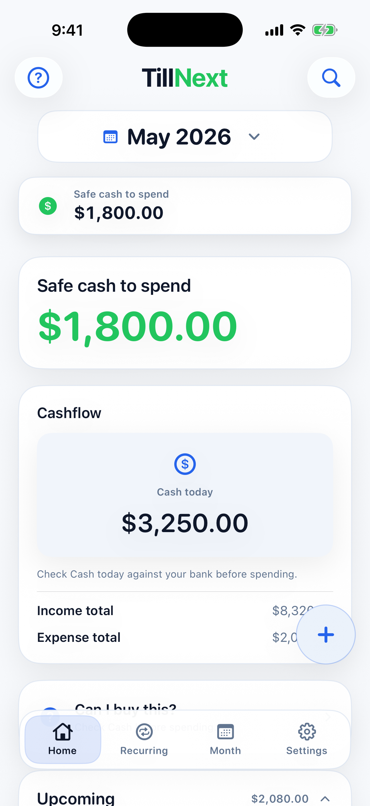
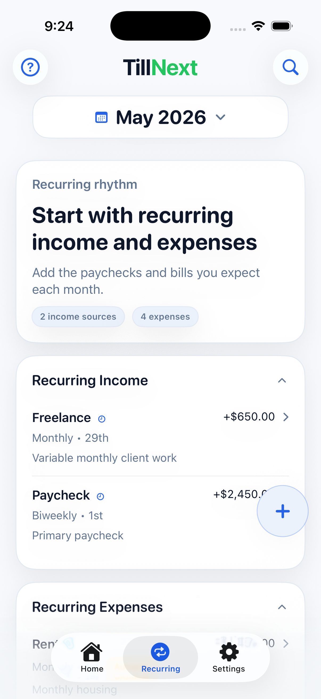
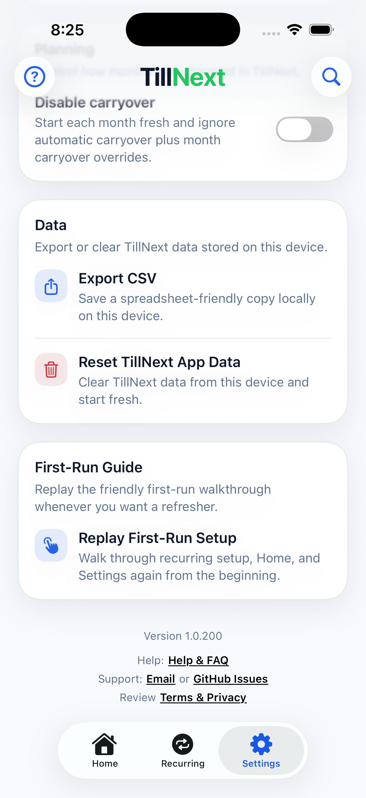
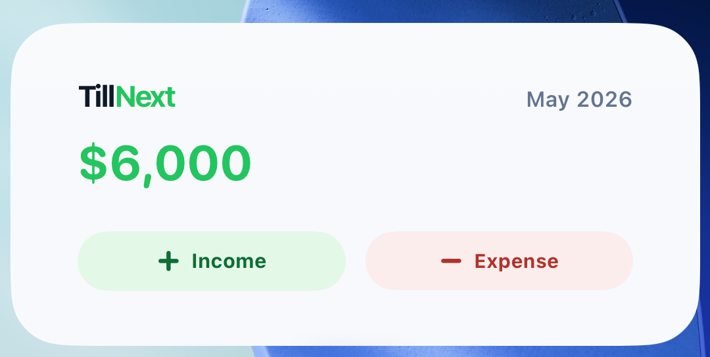
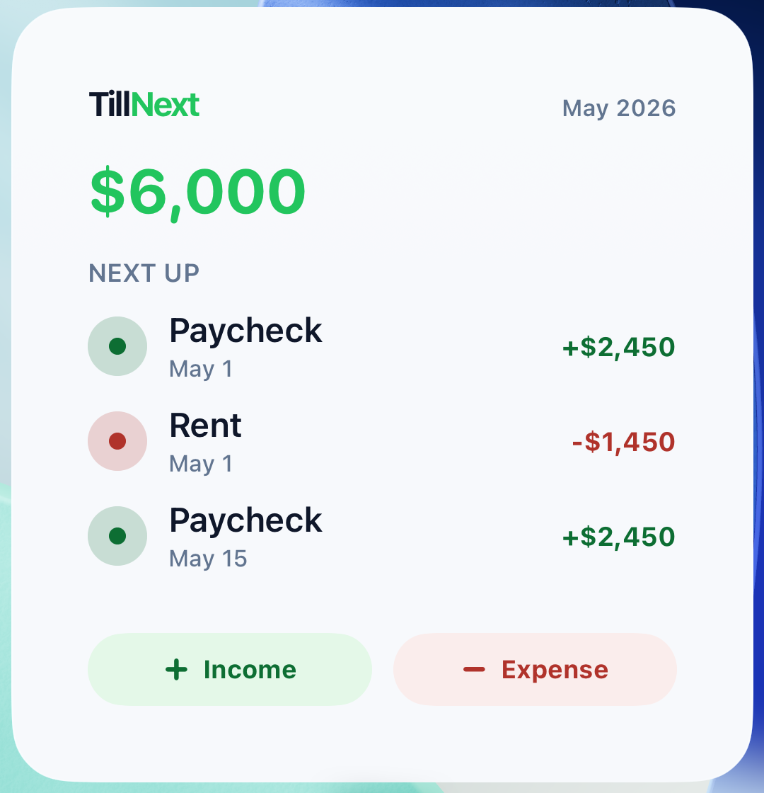
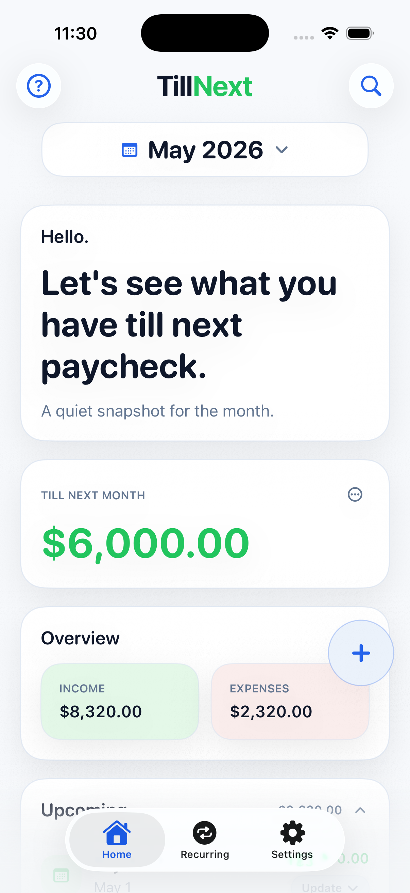
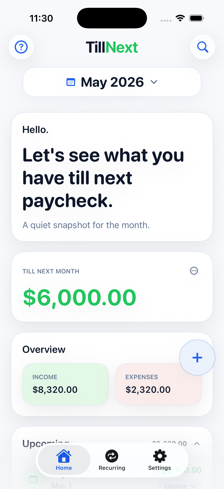
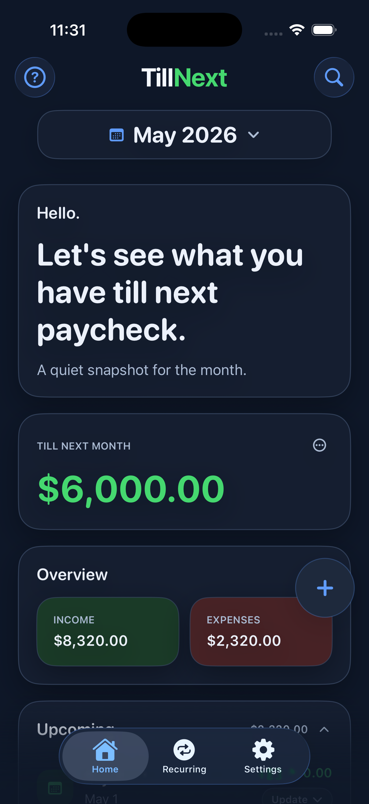

TillNext: Paycheck Planner Help & FAQ
TillNext: Paycheck Planner is a simple paycheck planning app for iPhone. This page covers the common tasks people usually need after setup.
Start With Home
Home shows the current month, upcoming and completed items, and how much is left till next month or next income.

- Use the month control to review another month.
- Tap an upcoming item to edit or update it.
- Use status buttons to mark expenses paid, income received, or items skipped.
- Review completed items when you need to confirm what already happened.
Manage Recurring Items
The Recurring tab is where repeating income and bills live. It also lets you view recurring items in future months.

- Add recurring income for paychecks, benefits, or other repeating money in.
- Add recurring expenses for bills and subscriptions.
- Use the month control to view future-starting recurring items.
- Open a recurring item from another month to see that month's occurrence date.
- Tap the clock button next to a recurring item to review past occurrences.
Use Settings
Settings keeps local app controls together: display preferences, carryover, CSV export, reset, help, support, and terms.

- Use CSV export when you want a spreadsheet-friendly copy of your local planning data.
- Use local reset only when you want to remove TillNext planning data from this device.
- Use support links for private email support or public technical issue reports.
- Review Terms & Privacy from the small footer link.
Use Home Screen Widgets
TillNext widgets show the same Till Next amount as Home. Quick-add widgets include buttons for one-time income and expenses, and the large widget shows the next few Home items.


Compare Home Display Options
Home follows the iPhone Light or Dark Mode setting. The Less Wordy option hides extra intro copy while keeping the same planner controls.



Common Tasks
Add a paycheck
Open Recurring, add recurring income, enter the amount and schedule, then save. TillNext will place occurrences into each month.
Add a bill
Open Recurring, add a recurring expense, enter the amount, due date, and frequency, then save. Use Autopay only as a visual reminder.
Add a one-time expense
Use the add button from Home for expenses that only happen once, such as groceries, fuel, repairs, or a special purchase.
Change one month without changing the whole rule
Open the item for the month you are viewing and update the month-specific amount or status. The recurring rule stays intact.
See a future recurring item
Open Recurring and move the month control forward. Future occurrences appear in the date context of the selected month.
Export your data
Open Settings and use Export CSV. TillNext prepares a spreadsheet-friendly file from the data stored locally on your device.
FAQ
Does TillNext require an account?
No. TillNext does not require an account or sign-in.
Does TillNext connect to banks, Google, or other services?
No. TillNext has no external connectors, bank sync, Google integrations, ads, analytics, or tracking.
What devices does TillNext support?
TillNext is built for iPhone and requires iOS 17 or later.
Where is my data stored?
Your planning data is stored locally on your device. TillNext does not send your paycheck or budgeting details to a developer-operated server.
Is Autopay automatic payment?
No. Autopay is only a visual reminder that a bill is paid automatically somewhere else. TillNext does not pay bills.
How does the trial work?
TillNext includes a local 30-day full-editing trial. After the trial ends, the app becomes read-only until you buy the one-time lifetime unlock through the App Store.
How do I get support?
For private support, email support@tillnext.app. For technical bug reports, use GitHub Issues.